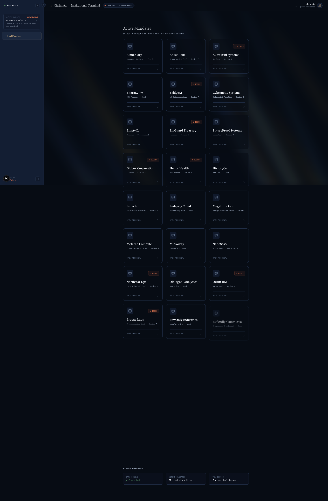
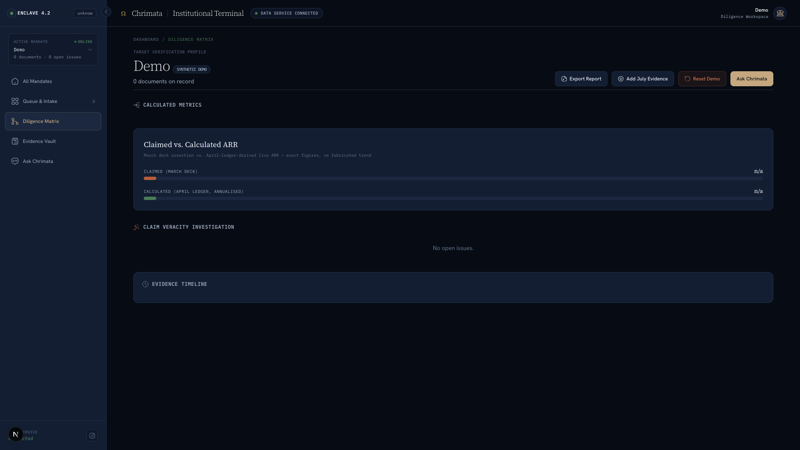
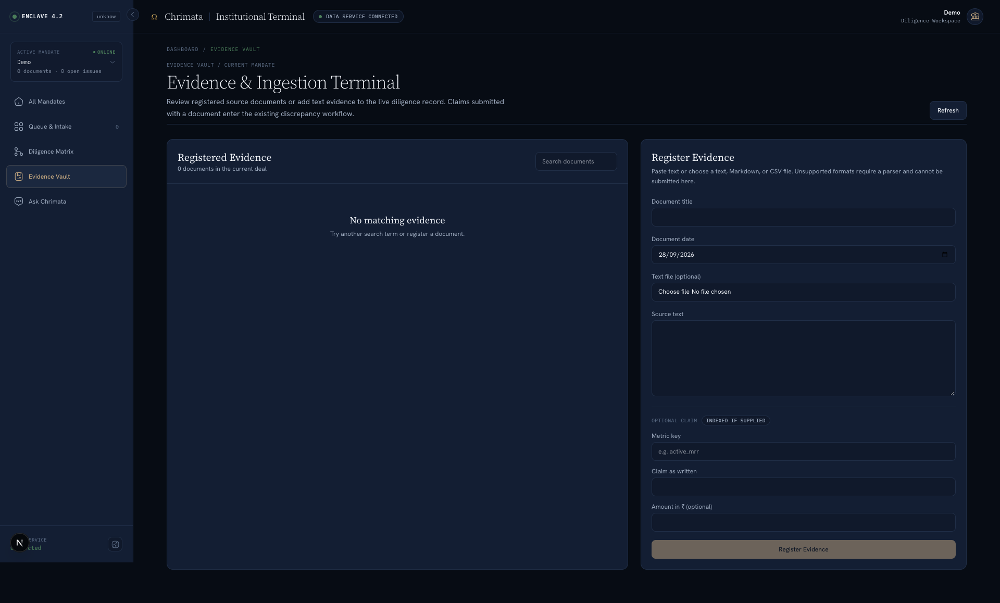
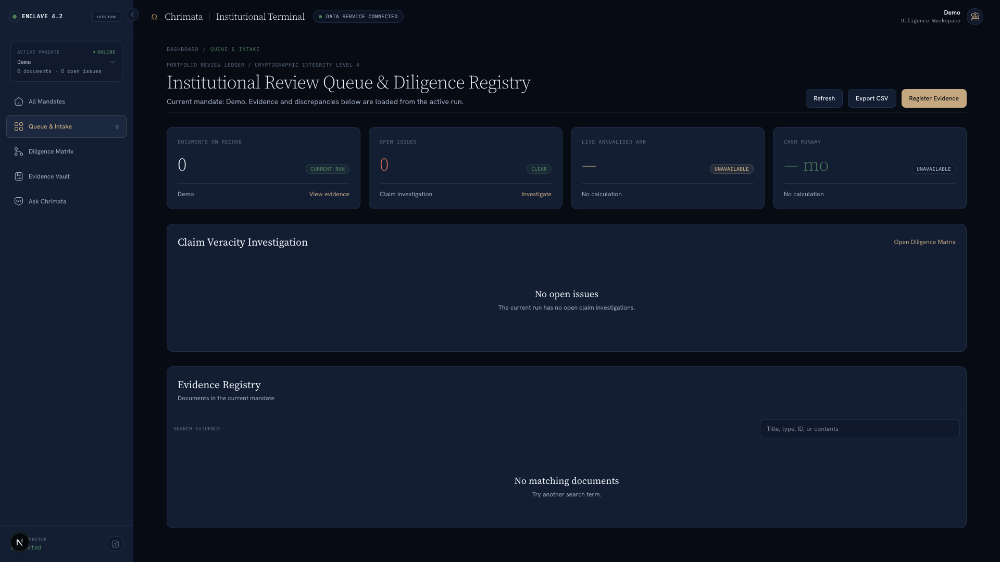
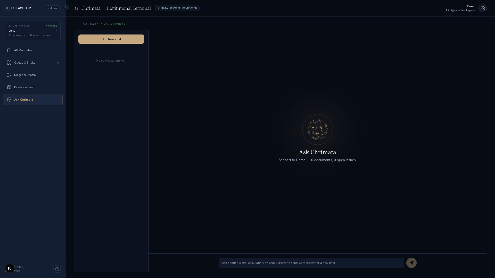

Every decision has a history.

The deal room, re-imagined.

Investigate information architecture.

Trace conclusions back to raw evidence.

"What changed?" Track discrepancies instantly.
Hindsight Memory
Past evidence → Past reasoning
New evidence arrives → Recalls context
Change identified → Updated review

Ask with context. Memory that survives the conversation.